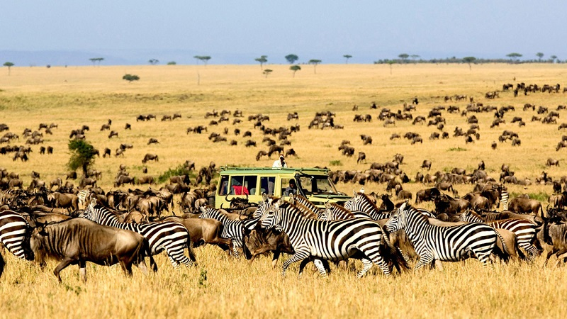
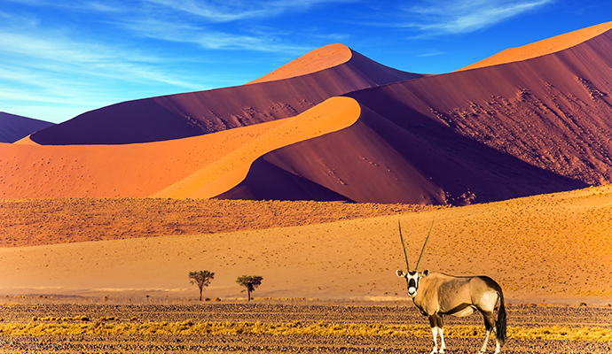

Must See Attractions

Serengeti National Park
Witness the majestic Great Migration and encounter Africa's "Big Five" in their natural habitat.

Victoria Falls
Marvel at one of the world’s largest waterfalls and experience thrilling activities like bungee jumping.

Namib Desert
Explore the world’s oldest desert with its towering red sand dunes and unique wildlife.